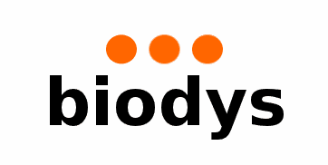

Biodys BV is a small engineering company working at the intersection of biotechnology, process engineering, instrumentation and software. We support focused technical projects, from analysis and equipment selection to prototyping, implementation and troubleshooting.
Practical engineering around fermentation, process equipment and utilities, with attention to measurability, reproducibility and maintainability.
Control and measurement solutions for process installations, including upgrades to existing systems where replacement of the complete installation is unnecessary.
Small, maintainable software tools and interfaces for industrial environments, especially where machines, process data and business systems need to connect.
Assignments are usually compact and technically focused. Examples include:
Direct contact, short lines and a pragmatic approach. Depending on the assignment, work may consist of analysis, design, prototyping, supplier evaluation, implementation support or troubleshooting.
Have a technical question, a small engineering project or a system that needs to be understood, improved or connected? Feel free to get in touch.
Biodys BV
Groningen, The Netherlands
E-mail: inq@biodys.com